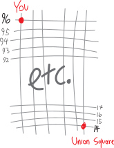
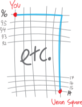
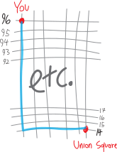
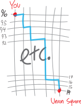
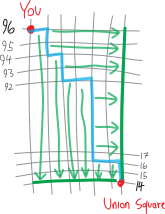
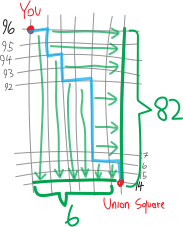

playing with choices, a.k.a. six short stories about the binomial theorem
Leah O’Donnell I
A while ago, we had this problem:
You have been trapped in an underground dungeon by an evil sorceress, Leah O’Donnell, tall, with long, flowing blonde hair, dressed in all black. With a cackle, O’Donnell tells you, “I will never free you from this prison until you calculate the coefficient on the \(a^{86}b^{72}\) term of the expansion of \((a+b)^{158}\)!” Her cackle is long and loud. It echoes endlessly off the dark damp concrete walls of the dungeon. You frown. O’Donnell is clearly expecting you to multiply out \((a+b)^n\) by hand, all the way up to \(n=158\). But maybe there’s a better way…
Hmm. There are lots of bad options here. We could multiply out, by hand, \((a+b)^{158}\), and look at what the coefficient is on the \(a^{86}b^{72}\) term. That sounds awful.
Suppose we were to actually multiply it all out. What would we expect? What would we get, at the end of the day? We’d get a bunch of terms (\(158\) of them, or rather, \(159\)), where each term looks like:
- a coefficient
- \(a\) raised to some power
- \(b\) raised to some power
What else would we know? Each term has \(a\) raised to some power, and \(b\) raised to some power, and:
- the powers of \(a\) run from \(158\) down to \(0\)
- the powers of \(b\) run from \(0\) up to \(158\)
- the power of \(a\), plus the power of \(b\), always add up to exactly \(158\)
But what about these coefficients on each term? What about the number in front of the \(a\) and the \(b\)? We’ve noticed there’s a connection between multiplying out binomials—expanding things like \((a+b)^n\)—and Pascal’s triangle and choosing and combinations. Where do the coefficients come from? We’ve seen that when we multiply out \((a+b)^n\), the coefficients are drawn from Pascal’s triangle:
\[\begin{array}{rccccccccccccc} ({\color{red}a}+{\color{blue}b})^0= & & & & & & 1 & & & & & \\ ({\color{red}a}+{\color{blue}b})^1= && & & & {\color{red}a} &+ & {\color{blue}b} & & & & \\ ({\color{red}a}+{\color{blue}b})^2= && & & {\color{red}a^2} &+ & 2{\color{red}a}{\color{blue}b} & + & {\color{blue}b^2} & & & \\ ({\color{red}a}+{\color{blue}b})^3= && & {\color{red}a^3} & + & 3{\color{red}a^2}{\color{blue}b} & + & 3{\color{red}a}{\color{blue}b^2} & + & {\color{blue}b^3} & & \\ ({\color{red}a}+{\color{blue}b})^4= && {\color{red}a^4} &+ & 4{\color{red}a^3}{\color{blue}b} & +& 6{\color{red}a^2}{\color{blue}b^2} & +& 4{\color{red}a}{\color{blue}b^3} & +& {\color{blue}b^4} & \\ ({\color{red}a}+{\color{blue}b})^5 = &{\color{red}a^5} & + & 5{\color{red}a^4}{\color{blue}b} & + & 10{\color{red}a^3}{\color{blue}b^2} & + & 10{\color{red}a^2}{\color{blue}b^3} &+ & 5{\color{red}a}{\color{blue}b^4} & +& {\color{blue}b^5} \\ \text{etc.} \end{array}\]So we just need to write out Pascal’s triangle down to \(158\) lines! Then we’ll be able to figure out the answer.
… this also sounds awful.
OK, better strategy. Where are these coefficients in Pascal’s triangle coming from? One way of thinking about them is that they’re coming from adding up the two entries right above them. That’s fine. But another way to think about them is that they’re combinations. They’re like the pizza toppings. When we multiply out, for example, \((a+b)^5\), we’re finding every way of combining either an \(a\) or a \(b\) from each of those five factors: \[\begin{align*} ({\color{red}a}+{\color{blue}b})^5 &= ({\color{red}a}+{\color{blue}b})({\color{red}a}+{\color{blue}b})({\color{red}a}+{\color{blue}b})({\color{red}a}+{\color{blue}b})({\color{red}a}+{\color{blue}b}) \\ \\ &\text{...multiply it all out}\\ &\quad\quad\text{combining every combination of one term from each factor...}\\ \\ &= {\color{red}a^5} + 5{\color{red}a^4}{\color{blue}b} + 10{\color{red}a^3}{\color{blue}b^2} + 10{\color{red}a^2}{\color{blue}b^3} + 5{\color{red}a}{\color{blue}b^4} + {\color{blue}b^5} \end{align*}\] If we want five \(a\)’s (the \(a^5\) term), there’s only one way to do it. If we want four \(a\)’s and one \(b\) (the \(a^4b\) term), there are five ways to do it. If we want three \(a\)’s and two \(b\)’s (the \(a^3b^2\) term), there are five choose two ways to do it: \[\text{the coefficient on the $a^3b^2$ term:}\quad _{5}\mathrm{C}_{2} = \binom{5}{2} = \frac{5!}{2!(5-2)!} = 10\] If we want two \(a\)’s and three \(b\)’s, there are five choose three ways to do it: \[\text{the coefficient on the $a^2b^3$ term:}\quad _{5}\mathrm{C}_{3} = \binom{5}{3} = \frac{5!}{3!(5-3)!} = 10\] If we want one \(a\) and four \(b\)’s, there are five choose four ways to do it: \[\text{the coefficient on the $ab^4$ term:}\quad _{5}\mathrm{C}_{4} = \binom{5}{4} = \frac{5!}{4!(5-4)!} = 5\] And finally, if we want zero \(a\)’s and five \(b\)’s, there are five choose five ways to do it: \[\text{the coefficient on the $b^5$ term:}\quad _{5}\mathrm{C}_{5} = \binom{5}{5} = \frac{5!}{4!(5-5)!} = 1\] So really, these coefficients are all combinations!!! Really, Pascal’s triangle is: \[\begin{array}{rccccccccccccc} ({\color{red}a}+{\color{blue}b})^0= & & & & & & \binom{0}{0} & & & & & \\ ({\color{red}a}+{\color{blue}b})^1= && & & & \binom{1}{0}{\color{red}a} &+ & \binom{1}{1}{\color{blue}b} & & & & \\ ({\color{red}a}+{\color{blue}b})^2= && & & \binom{2}{0}{\color{red}a^2} &+ & \binom{2}{1}{\color{red}a}{\color{blue}b} & + & \binom{2}{2}{\color{blue}b^2} & & & \\ ({\color{red}a}+{\color{blue}b})^3= && & \binom{3}{0}{\color{red}a^3} & + & \binom{3}{1}{\color{red}a^2}{\color{blue}b} & + & \binom{3}{2}{\color{red}a}{\color{blue}b^2} & + & \binom{3}{3}{\color{blue}b^3} & & \\ ({\color{red}a}+{\color{blue}b})^4= && \binom{4}{0}{\color{red}a^4} &+ & \binom{4}{1}{\color{red}a^3}{\color{blue}b} & +& \binom{4}{2}{\color{red}a^2}{\color{blue}b^2} & +& \binom{4}{3}{\color{red}a}{\color{blue}b^3} & +& \binom{4}{4}{\color{blue}b^4} & \\ ({\color{red}a}+{\color{blue}b})^5 = &\binom{5}{0}{\color{red}a^5} & + & \binom{5}{1}{\color{red}a^4}{\color{blue}b} & + & \binom{5}{2}{\color{red}a^3}{\color{blue}b^2} & + & \binom{5}{3}{\color{red}a^2}{\color{blue}b^3} &+ & \binom{5}{4}{\color{red}a}{\color{blue}b^4} & +& \binom{5}{5}{\color{blue}b^5} \\ \text{etc.} \end{array}\]Here, we’re trying to multiply out \((a+b)^{158}\). So we’re choosing from \(158\) multiplications/options. If we want the coefficient on the \(a^{86}b^{72}\) term—well, there are \(158\) choose \(86\) ways to select only \(86\) of the \(a\)’s from these \(158\) factors! So the answer is: \[\binom{158}{86} a^{86}b^{72}\] Or, if you prefer \({}_n \mathrm{ C }_k\) notation: \[{}_{158} \mathrm{ C }_{86} a^{86}b^{72}\] Alternatively, we could think of this in terms of the number of ways we could choose the \(b\)’s. We have \(158\) total factors, and we want to choose \(72\) \(b\)’s, so this is, equivalently, \(158\) choose \(72\): \[\binom{158}{72} a^{86}b^{72} \quad\text{or}\quad {}_{158} \mathrm{ C }_{72}a^{86}b^{72} \] Either way, as an “actual number” (an overrated concept), the coefficient works out to be: \[12,\!492,\!285,\!575,\!801,\!524,001,\!867,\!680,\!351,\!343,\!564,\!302,\!637,\!534,\!950\] So the full term is: \[12,\!492,\!285,\!575,\!801,\!524,001,\!867,\!680,\!351,\!343,\!564,\!302,\!637,\!534,\!950a^{86}b^{72}\]
Can we compute the powers of \(2\)?!?
What’s \(2^n\)? We don’t know! No idea! We’ve never known how to find powers of \(2\)! \[2^n = \quad ???\] Like, for example, what’s \(2^5\)? Who knows! Sounds like a Fields Medal-level question! \[2^5 = \quad ???\] Now that we’ve spent all this time playing around with expanding \((a+b)^n\), of doing binomial expansions and Pascal’s triangle and binomial coefficients and the like, we can figure it out! After all, \(2=1+1\). So if we want to find \(2^n\), it’s the same as \((1+1)^n\)—which, thanks to all the stuff we’ve learned, we know how to do!
\[\begin{align*} 2^n = (1+1)^n &= \text{we can expand this using Pascal's triangle}\\ &\quad\quad\text{/the binomial theorem/etc.!}\end{align*}\] In the past we’ve been able to find smaller powers of \(2\) by using, like, FOIL or something: \[\begin{align*} 2^2 = (1+1)^2 &= (1+1)(1+1) \\ &= \underbrace{1\cdot1}_{\text{first}} + \underbrace{1\cdot 1}_{\text{outer}} + \underbrace{1\cdot 1}_{\text{inner}} + \underbrace{1\cdot 1}_{\text{last}} \\ &= 1^2 + 2\cdot 1 + 1^2 \\ &= 1 + 2 + 1 \\ &= 4 \end{align*}\] And now, using the full power of the binomial theorem and Pascal’s triangle and whatnot, we can find higher powers easily! For example, we can finally figure out \(2^5\)! It’s just: \[\begin{align*}2^5 = (1+1)^5 &=\text{the coefficients from row \#5 of Pascal's triangle,} \\ &\quad\quad\text{together with decreasing powers of $1$ and increasing powers of $1$}\\ \\ &= 1\!\cdot\!{\color{red}1^5}{\color{blue}1^0} \,\,+\,\, 5\!\cdot\! {\color{red}1^4}\!\cdot\!{\color{blue}1^1} \,\,+\,\, 10\!\cdot\!{\color{red}1^3}\!\cdot\!{\color{blue}1^2} \,+\, 10\!\cdot\!{\color{red}1^2}\!\cdot\!{\color{blue}1^3} \,\,+\,\, 5\!\cdot\!{\color{red}1^1}\!\cdot\!{\color{blue}1^4} \,\,+\,\, 1\!\cdot\!{\color{red}1^0}\!\cdot\!{\color{blue}1^5} \\ \\ &= 1\!\cdot\!{\color{red}1}\!\cdot\!{\color{blue}1} \,\,+\,\, 5\!\cdot\! {\color{red}1}\!\cdot\!{\color{blue}1} \,\,+\,\, 10\!\cdot\!{\color{red}1}\!\cdot\!{\color{blue}1} \,+\, 10\!\cdot\!{\color{red}1}\!\cdot\!{\color{blue}1} \,\,+\,\, 5\!\cdot\!{\color{red}1}\!\cdot\!{\color{blue}1} \,\,+\,\, 1\!\cdot\!{\color{red}1}\!\cdot\!{\color{blue}1} \\ \\ &= 1 \,\,+\,\, 5 \,\,+\,\, 10 \,+\, 10 \,\,+\,\, 5 \,\,+\,\, 1\\ \\ &= 32 \end{align*} \] … okay this is obviously all quite silly. We know that \(2^5=32\). We’ve known that for years. We don’t need the binomial theorem and Pascal’s triangle to figure it out. We don’t need to use FOIL to compute \(2^2\). Doing so makes things more complicated, not less. But that’s the point: this is humor. We’re being silly and ridiculous and playful, intellectually so. It’s on-theme with Sydni’s charge for us this week to be playful. Being playful isn’t just about jumping in the bouncy house and sucking on Otter Pops—the intellectual, creative work that we do in school can itself be playful. And it should be. (Being playful doesn’t mean it’s any less serious.)
This is a good example! We don’t need the binomial theorem to compute \(2^5\). But we can use the binomial theorem to compute it, so why not, just for fun? All the time in life we do things we don’t need to do, just for the fun of it. We don’t need to go on a hike. We could just drive. We don’t need to cook our own food. We can just go out to a restaurant or order in. (Increasingly: we don’t need to write things, when we can have an LLM do it… and yet I’m writing all this by hand! Why would I cede my pleasure to an LLM?) In October I spent a long weekend in Yosemite with Spencer, the middle school math teacher, and the last climb we did (at 10 PM, by moonlight) was a climb we’d both done a zillion times. Just for fun, we decided to climb it in deliberately silly ways: choosing harder variations, or setting constraints (“climb this segment without hands”), just for the fun of it, just to play on the rock.
Here’s another example of playfulness in math. One of my favorite theorems in calculus is what’s called Taylor’s Theorem. Taylor’s Theorem says (basically) that everything is a polynomial. You prove it by doing some standard calculus techniques/procedures—except, at every decision point/juncture in those procedures, you make the stupidest possible decision. Or, put more lightly, you make the silliest, the most absurd, the most ridiculous possible decision. The proof is funny! The proof is comedy. And yet we get this very beautiful and very deep result. It’s a result which (unlike \(2^5=32\)) we probably couldn’t have gotten more easily1. Out of comedy, we get truth. That’s an important point. Humor and playfulness aren’t just things that are valuable in and of themselves; they’re also a path towards truth.
That’s relevant here as well. Computing \(2^n\) using binomial coefficients and Pascal’s triangle doesn’t tell us anything new about \(2^n\). But it does tell us something new about Pascal’s triangle and the binomial coefficients. Remember the observation that some of you made, that if we add up all the numbers in any given row of Pascal’s triangle, they sum to a power of \(2\)? \[\begin{array}{rcccccccccccccc} & & & & & & 1 & & & & & & & & = 1\\ & & & & & 1 & {\color{gray}{+}} & 1 & & & & & & & = 2\\ & & & & 1 & {\color{gray}{+}} & 2 & {\color{gray}{+}} & 1 & & & & & & = 4\\ & & & 1 & {\color{gray}{+}} & 3 & {\color{gray}{+}} & 3 & {\color{gray}{+}} & 1 & & & & & = 8\\ & & 1 & {\color{gray}{+}} & 4 & {\color{gray}{+}} & 6 & {\color{gray}{+}} & 4 & {\color{gray}{+}} & 1 & & & & = 16\\ & 1 & {\color{gray}{+}} & 5 & {\color{gray}{+}} & 10 & {\color{gray}{+}} & 10 & {\color{gray}{+}} & 5 & {\color{gray}{+}} & 1 & & & = 32\\ 1 & {\color{gray}{+}} & 6 & {\color{gray}{+}} & 15 & {\color{gray}{+}} & 20 & {\color{gray}{+}} & 15 & {\color{gray}{+}} & 6 & {\color{gray}{+}} & 1 & & = 64\\ \end{array}\] This is a proof of that! This is a proof, or at least the core idea of a proof, that the \(n\)’th row of Pascal’s triangle sums to \(2^n\): \[\begin{array}{rrrccccccccccccccc} 1 &= 2^0 &= (1+1)^0 = & & & & & & & 1 & & & & & & & \\ 2 &= 2^1 &= (1+1)^1 = & & & & & & 1 & {\color{gray}{+}} & 1 & & & & & & \\ 4 &= 2^2 &= (1+1)^2 = & & & & & 1 & {\color{gray}{+}} & 2 & {\color{gray}{+}} & 1 & & & & & \\ 8 &= 2^3 &= (1+1)^3 = & & & & 1 & {\color{gray}{+}} & 3 & {\color{gray}{+}} & 3 & {\color{gray}{+}} & & & & & \\ 16 &= 2^4 &= (1+1)^4 = & & & 1 & {\color{gray}{+}} & 4 & {\color{gray}{+}} & 6 & {\color{gray}{+}} & 4 & {\color{gray}{+}} & 1 & & & \\ 32 &= 2^5 &= (1+1)^5 = & & 1 & {\color{gray}{+}} & 5 & {\color{gray}{+}} & 10 & {\color{gray}{+}} & 10 & {\color{gray}{+}} & 5 & {\color{gray}{+}} & 1 & & \\ 64 &= 2^6 &= (1+1)^6 = & 1 & {\color{gray}{+}} & 6 & {\color{gray}{+}} & 15 & {\color{gray}{+}} & 20 & {\color{gray}{+}} & 15 & {\color{gray}{+}} & 6 & {\color{gray}{+}} & 1 & \\ \end{array}\]Out of play, truth. That should be our motto: Ex ludo veritas.
Feynman on playfulness
In his memoir, Surely You’re Joking, Mr. Feynman (which you all should read), the physicist Richard Feynman writes about his feelings of burnout as a young professor in the late 1940s. He was young, but not that young; he had already done a lot of important work, but he had fallen into a routine as a physics professor; he was admired and respected and acclaimed, but full of ennui, and not feeling excited about physics or his research:
So here I was, “burned out,” reading the Arabian Nights and feeling depressed about myself …
Then I had another thought. Physics disgusts me a little bit now, but I used to enjoy doing physics. Why did I enjoy it? I used to play with it. I used to do whatever I felt like doing—it didn’t have to do with whether it was important for the development of nuclear physics, but whether it was interesting and amusing for me to play with. When I was in high school, I’d see water running out of a faucet growing narrower, and wonder if I could figure out what determines that curve. I found it was rather easy to do. I didn’t have to do it; it wasn’t important for the future of science; somebody else had already done it. That didn’t make any difference. I’d invent things and play with things for my own entertainment.
So I got this new attitude. Now that I am burned out and I’ll never accomplish anything, I’ve got this nice position at the university teaching classes which I rather enjoy, and just like I read the Arabian Nights for pleasure, I’m going to play with physics, whenever I want to, without worrying about any importance whatsoever.
Within a week I was in the cafeteria and some guy, fooling around, throws a plate in the air. As the plate went up in the air I saw it wobble, and I noticed the red medallion of Cornell on the plate going around. It was pretty obvious to me that the medallion went around faster than the wobbling.
I had nothing to do, so I start to figure out the motion of the rotating plate. I discover that when the angle is very slight, the medallion rotates twice as fast as the wobble rate. Then I thought, “Is there some way I can see in a more fundamental way, by looking at the forces or the dynamics?”
I don’t remember how I did it, but I ultimately worked out what the motion of the mass particles is, and how all the accelerations balance… I still remember going to Hans Bethe and saying, “Hey, Hans! I noticed something interesting. Here the plate goes around so, and the reason it’s two to one is …” and I showed him the accelerations.
He says,”Feynman, that’s pretty interesting, but what’s the importance of it? Why are you doing it?”
“Hah!” I say. ”There’s no importance whatsoever. I’m just doing it for the fun of it." His reaction didn’t discourage me; I had made up my mind I was going to enjoy physics and do whatever I liked.
It was effortless. It was easy to play with these things. It was like uncorking a bottle: Everything flowed out effortlessly. I almost tried to resist it! There was no importance to what I was doing, but ultimately there was. The diagrams and the whole business that I got the Nobel Prize for came from that piddling around with the wobbling plate.2
Math isn’t about exactitude: what’s \(2.05^5\)?
Here’s another interesting question: can we estimate \(2.05^5\)? Not compute it exactly, note, estimate it.
If we want to know what \(2.05^5\) is exactly, we could do it in a straightforward-but-tedious way: just do a lot of multiplications. I don’t even remember how to do elementary school long multiplication, but I guess we’d set up something like: \[\begin{align*} 2.05& \\ \times 2.05 \\ \hline \end{align*}\] And, like, multiply \(5\) by \(5\) to get \(25\), and so put a \(5\) or something down and carry the two or something like that: \[\begin{align*} 2.\cancel{0}^25& \\ \times 2.05 \\ \hline 5& \end{align*}\] I’m not even sure how to multiply like that any more. I haven’t done it since elementary school! I either multiply things in my head using whatever random heuristics I’ve built up over the years, or use a calculator. It seems easy, but tedious and boring (and we have to do it like five times!).
Here’s another idea. What if we just use our newfound binomial-theorem/Pascal’s triangle to approximate it? To get a not-exact, but good-enough answer??? After all, when we multiply things in our heads, that’s kind of what we do (or at least what I do). Like, for example, if I have to multiply \(13\) by \(12\) in my head, I’ll think, “Well, \(13\) times \(10\) is \(130\), and then there are two more \(13s\), so it’s \(130 + 13 + 13\), or just \(130+26\), or \(156\).” So it’s like I’m approximating it by using convenient nearby numbers (like the closest multiple of \(10\), for example), and then refining it to get the exact answer. If speed is an issue, I can just say, “What’s \(13\) times \(12\)? A bit more than \(130\)!”
What about \(2.05^5\)? Getting the exact answer, by hand, seems unpleasant. Can we approximate it? \(2^5\) is \(32\), so \((2.05)^5\) is probably about \(32\). A little bit more. Not that much more. But how much more?
We can use the binomial theorem/Pascal’s triangle ideas to approximate it! \(2.05\), after all, is just \(2+.05\). So if we’re raising it to the fifth, we have \((2+.05)^5\), and that looks like a binomial bad boy!!! So, if we think about the relavent line of Pascal’s triangle, we’ll have something like: \[\begin{align*} (2.05)^5 &= (2+0.05)^5 \\ \\ &= \left(2 + \frac{1}{20}\right)^5 \\ \\ &= 1\!\cdot\!{\color{red}2^5}{\color{blue}\left(\frac{1}{20}\right)^0} \,\,+\,\, 5\!\cdot\! {\color{red}2^4}\!\cdot\!{\color{blue}\left(\frac{1}{20}\right)^1} \,\,+\,\, 10\!\cdot\!{\color{red}2^3}\!\cdot\!{\color{blue}\left(\frac{1}{20}\right)^2} \,+\, 10\!\cdot\!{\color{red}2^2}\!\cdot\!{\color{blue}\left(\frac{1}{20}\right)^3} \,\,+\,\, 5\!\cdot\!{\color{red}2^1}\!\cdot\!{\color{blue}\left(\frac{1}{20}\right)^4} \,\,+\,\, 1\!\cdot\!{\color{red}2^0}\!\cdot\!{\color{blue}\left(\frac{1}{20}\right)^5} \end{align*}\] This does not look much nicer!!! It’s different than multiplying out \(2.05^5\) by hand using the elementary-school method, but it still looks awful and miserable.
But there’s a trick! Or rather, there’s no trick: there’s something to notice. (Important life lesson: there are no tricks; there’s just better observation.) In our binomial expansion, each term consists of:
- a binomial coefficient
- in this case: \(1,5,10,10,5,1\)
- a power of \(2\)
- in this case: \({\color{red} 2^5,2^4,2^3,2^2,2^1,2^0}\)
- a power of \(1/20\)
- in this case: \({\color{blue} \left(\frac{1}{20}\right)^0, \left(\frac{1}{20}\right)^1, \left(\frac{1}{20}\right)^2, \left(\frac{1}{20}\right)^3, \left(\frac{1}{20}\right)^4, \left(\frac{1}{20}\right)^5 }\)
Let’s re-organize this a bit. I’m going to distribute the powers of \(1/20\) into the fraction, and also move the powers of \(2\) onto the top of the same fraction: \[\begin{align*} &= 1\cdot {\color{red}2^5}{\color{blue}\frac{1^0}{20^0}} \,\,+\,\, 5\!\cdot\! {\color{red}2^4}\!\cdot\!{\color{blue}\frac{1^1}{20^1}} \,\,+\,\, 10\!\cdot\!{\color{red}2^3}\!\cdot\!{\color{blue}\frac{1^2}{20^2}} \,+\, 10\!\cdot\!{\color{red}2^2}\!\cdot\!{\color{blue}\frac{1^3}{20^3}} \,\,+\,\, 5\!\cdot\!{\color{red}2^1}\!\cdot\!{\color{blue}\frac{1^4}{20^4}} \,\,+\,\, 1\!\cdot\!{\color{blue}\frac{1^5}{20^5}} \\ \\ &= 1\!\cdot\!\frac{{\color{red} 2^5}}{{\color{blue} 20^0}} \,\,+\,\,5\!\cdot\!\frac{ {\color{red} 2^4}}{{\color{blue}20^1}} \,\,+\,\, 10\!\cdot\!\frac{ {\color{red} 2^3}}{{\color{blue}20^2}} \,\,+\,\, 10\!\cdot\!\frac{ {\color{red} 2^2}}{{\color{blue}20^3}} \,\,+\,\, 5\!\cdot\!\frac{ {\color{red} 2^1}}{{\color{blue}20^4}} \,\,+\,\, 1\!\cdot\!\frac{ {\color{red} 2^0}}{{\color{blue}20^5}} \end{align*}\] Think about what’s going on with those powers of \(2\) and the powers of \(1/20\). The powers of \(2\) get bigger and bigger, as we raise them to bigger powers! But the powers of \(1/20\) get smaller and smaller, as we raise them to bigger and bigger powers: \[\begin{align*} &= 1\!\cdot\!\frac{{\color{red} 32}}{{\color{blue} 1}} \,\,+\,\,5\!\cdot\!\frac{ {\color{red} 16}}{{\color{blue}20}} \,\,+\,\, 10\!\cdot\!\frac{ {\color{red} 8}}{{\color{blue}400}} \,\,+\,\, 10\!\cdot\!\frac{ {\color{red} 4}}{{\color{blue}8\!,\!000}} \,\,+\,\, 5\!\cdot\!\frac{ {\color{red} 2}}{{\color{blue}160\!,000}} \,\,+\,\, 1\!\cdot\!\frac{ {\color{red} 1}}{{\color{blue}3\!,200\!,000}} \end{align*}\] It’s like a battle between the powers of \(2\) and the powers of \(120\)! But… it’s actually not much of a battle, because they’re both going in the same direction. Or rather, they’re going in opposite directions, but towards the same goal. The powers of \(2\) go down as the powers of \(1/20\) go up. As the exponent on \(2\) goes down, \(2^\text{exponent}\) gets smaller. As the exponent on \(1/20\) goes up, \((1/20)^\text{exponent}\) gets smaller. So the further and further to the right we get, the smaller and smaller the terms get!!! Let’s simplify this a bit more: \[\begin{align*} &= {\color{red} 32} \,\,+\,\,\frac{ 5\!\cdot\!{\color{red} 16}}{{\color{blue}20}} \,\,+\,\, \frac{10\!\cdot\! {\color{red} 8}}{{\color{blue}400}} \,\,+\,\, \frac{ 10\!\cdot\!{\color{red} 4}}{{\color{blue}8\!,\!000}} \,\,+\,\, \frac{ 5\!\cdot\!{\color{red} 2}}{{\color{blue}160\!,000}} \,\,+\,\, \frac{ {\color{red} 1}}{{\color{blue}3\!,200\!,000}} \\ \\ &= 32 + \frac{80}{20} + \frac{80}{400} + \frac{40}{8,\!000} + \frac{10}{160,\!000} + \frac{1}{3,\!200,\!000} \\ \\ &= 32 + 4 + 0.2 + \frac{40}{8,\!000} + \frac{10}{160,\!000} + \frac{1}{3,\!200,\!000} \end{align*}\] Look at that!!! The terms start big—they start with that big bad \(2^5=32\) term—and then get smaller and smaller! It’s like the binomial theorem/Pascal’s triangle is already approximating this for us!!! \[\begin{align*} &= \underbrace{32}_{\text{big}} + \underbrace{4}_{\text{smaller}} + \underbrace{0.2}_{\text{small}} + \underbrace{\frac{40}{8,\!000}}_{\text{very small}} + \underbrace{\frac{10}{160,\!000}}_{\text{extremely small}} + \underbrace{\frac{1}{3,\!200,\!000}}_{\text{basically zero}} \\ \\ &= 32 + 4 + 0.2 + 0.005 + 0.0000625 +0.000000325 \end{align*}\] I worked out those smaller terms with a calculator… but really, the first two or three terms are easy to work out by hand. If we take just the first three terms, it’s a pretty good approximation!! \[\begin{align*} (2.05)^5 &\approx 32 + 4 + 0.2 \\ &\approx 36.2 \end{align*}\] Liam wrote this problem, and so I was surprised when I actually worked it out. I thought \(2.05^5\) was going to be like \(32.5\) or \(33\) or something, not \(36\)!
Here’s what the approximation looks like, as we add more and more terms: \[\begin{align*} &= \underbrace{\underbrace{\underbrace{\underbrace{\underbrace{32 + 4}_{=36} + 0.2}_{=36.2} + \frac{40}{8,\!000}}_{=36.205} + \frac{10}{160,\!000}}_{=36.2050625} + \frac{1}{3,\!200,\!000}}_{=36.2050628125} \end{align*}\] The more and more terms we add, the closer and closer we get to the actual value! But just the first couple terms gets us pretty close.
| number of terms | value | percent of actual value | |
|---|---|---|---|
| \(1\) | \(32\) | \(88.39\%\) | |
| \(2\) | \(36\) | \(99.43\%\) | |
| \(3\) | \(36.2\) | \(99.986\%\) | |
| \(4\) | \(36.205\) | \(99.99982\%\) | |
| \(5\) | \(36.2050625\) | \(99.99999913\%\) | |
| \(5\) | \(36.2050628125\) | \(100\%\) |
There’s another big idea here. If we’re trying to get the perfect answer for \(2.05^5\), the process will be really hard and long and tedious. But we can get a good-enough answer pretty easily!
Too often we think of math as being about details. As requiring this binary between true and false, right and wrong, good and evil. But it’s so much more complicated than that. When we get so focused on the details, we don’t see the bigger picture. We miss the forest for the trees. Sometimes when we zoom out, make things fuzzier and blurrier—deliberately don’t worry about the details—we can actually see more clearly. If we’re focused on all the tiny details, we can miss the bigger patterns. Sometimes squinting at a painting—blurring all the brushstrokes—can actually help us see it better.
(Also, there’s a way in which a calculation like this is foreshadowing some of the ideas of calculus! I’ll leave it at that.)
Leah O’Donnell II
We’ve escaped from Leah O’Donnell’s dungeon. Our situation is improved in some ways, and worse in other ways:
You have escaped from Leah O’Donnell’s dark damp decrepit dungeon!!! You find yourself on the Upper West Side, at 96th and Amsterdam, phoneless, moneyless, all alone. You need to get down to your office in Union Square, at 14th and Broadway. It’s Manhattan: a perfect grid. The streets run east-west (well, more like northwest-southeast); the avenues run north-south (more like northeast/southwest—the Manhattan grid is about 29 degrees off-axis. Blame Manhattan Island for itself behind about 29 degrees off from running perfectly north-south). Anyway, you have to get back to your offices! Obviously you want to get there as fast as possible. You’re not going to do something stupid like travel by way of New Jersey or Quebec. You’re going to take the shortest path. Well, not the shortest shortest path: that’d be a straight line, which would take you through buildings, and you can’t do that. This is real life, not a video game. You have to follow the street grid. You have to make a series of left and right turns to make it to Union Square. But there are so many options! Do you walk all the way south to 14th St., and then turn east to get to Union Square? Do you immediately walk east, and then turn south to walk to Union Square??? (Amsterdam Ave., note, is 10th Avenue, and Union Square is at 4th Avenue.) Your confinement in O’Donnell’s dungeon has only heightened your anxiety. You feel paralyzed by the possibilities before you. How many ways are there to get to Union Square the fastest?!?
There are a lot of details going on with the Manhattan street grid, but abstracted, our situation looks like:

Yeah, yeah, yeah; Central Park’s in the way, there’s Broadway, etc… just imagine we’re in this idealized/abstracted grid world! (And go read about the Commissioners’ Plan of 1811 if you want to know more about the history of the Manhattan street grid!)
One way we could walk would be to go directly east along 96th St for six blocks, and then turn south on 4th Ave. and walk for 82 blocks, for a walk of 88 total blocks:

Alternatively, we could go directly south on Amsterdam for 82 blocks, and then turn east and go along 14th street for six blocks, for a walk of 88 total blocks:

Both these ways of getting to Union Square are the same distance: 82 blocks south, and 6 blocks east! 88 blocks total!3 So are there only two shortest ways of getting to Union Square??? No! We could take some zig-zaggy mixture:

It turns out that any zig-zaggy-in-between path will also be 88 total blocks! It’ll also be 82 blocks south and 6 blocks east. Why? Imagine we take one of these zig-zaggy paths, and then, like, project it as far east and as far south as we can:

It’s going to form an L-shape, 82 blocks tall and 6 blocks wide! No matter what zig-zaggy combination of turns we take inside this box, they’ll always add up to six total blocks east and 82 blocks south. (Of course we could go in circles inside the box or something, but we’re talking about the shortest paths.)

So to count all the shortest paths from 96th and Amsterdam to Union Square, we need to not just count the two paths on the “outside,” but also all these zig-zaggy paths in between!!! How many are there? There must be dozens! Hundreds! How do we count them all up? How do we make sure we haven’t missed any? How do we make sure we haven’t counted any twice?
Well… the same reasoning we used to see that all these zig-zaggy paths have the same length is the reasoning we can use to count them all up! No matter what path we take, we’ll have to walk six blocks east. No matter what path we take, we’ll have to walk 82 blocks south. So no matter what path we take, we have to walk 88 blocks. Six of them must be east. 82 of them must be south. How do we take the 88 total blocks we walk, and choose six of them to be east?
… it’s a combination!!!
We’re walking \(88\) total blocks, and we need to choose to walk six of them eastwards, so the total number of paths is: \[\binom{88}{6} = _{88}\mathrm{C}_{6} = \frac{88!}{6!(88-6)!} = 541,931,236\] Alternatively described, we’re walking \(88\) total blocks, and we need to choose to walk 82 of them south, so the total number of paths is: \[\binom{88}{82} = _{88}\mathrm{C}_{82} = \frac{88!}{82!(88-82)!} = 541,931,236\] Notice how, algebraically, we can see that these two descriptions—choose six blocks to go east on, or choose \(82\) blocks to go south down—are the same: \[\begin{align*} \substack{\text{walk $88$ blocks, choosing}\\\text{$6$ of them to go east}}&= \binom{88}{6} \\ \\ &= \frac{88!}{6!(88-6)!}\\ \\ &= \frac{88!}{6!(82)!} \quad\text{(subtraction)} \\ \\ &= \frac{88!}{82!(6)!} \quad\text{(rearranging)} \\ \\ &= \frac{88!}{82!(88-82)!} \quad\text{(because $6=88-82$)} \\ \\ &= \binom{88}{82} \\ \\ &= \substack{\text{walk $88$ blocks, choosing}\\\text{$82$ of them to go south}} \end{align*}\]
Either way, it’s a lot of possibilities! \(542\) million different, equally-short ways to walk to Union Square! Talk about the paradox of choice.
What about \((1.95)^5\)?
We used the binomial theorem to estimate \((2.05)^5\). Can we use it to estimate \((1.95)^5\)??? This should be basically the same: we estimated \((2.05)^5\) by breaking it up into \((2\) plus \(.05)^5\); here, we can break up \((1.95)^5\) into \((2\) minus \(.05)^5\), and again use the binomial theorem. Presumably we’ll get the same-ish result? We had: \[(2.05)^5 \quad=\quad 2^5 + \text{(a little bit}) \quad\approx\quad 32 + 4.2 \quad\approx\quad 36.4 \] Here we’re subtracting \(.05\) from \(2\), not adding it, so I guess we’ll get: \[(1.95)^5 \quad=\quad 2^5 - \text{(a little bit}) \quad\overset{???}{\approx}\quad 32 - 4.2 \quad\overset{???}{\approx}\quad 27.8 \] Yeah???
Actually, I think there are some simpler proofs of Taylor’s theorem, but this particular proof I’m describing has always felt to me like the right one, the one that makes things feel true.↩︎
Surely You’re Joking, Mr. Feynman, pp172-4↩︎
OK, it’s tempting to say “88 total blocks,” which is fine in an an abstract/idealized/mathematical sense; in practicality, the east-west block distance in New York is about three times as long as the north-south block distance. New Yorkers refer to “short blocks” and “long blocks.” They’re different units! So this situation is 82 short blocks, and 6 long blocks. But that doesn’t actually make a difference in our calculations.↩︎